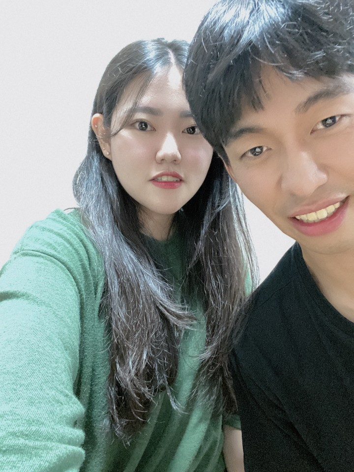

덕담듣고 정떨어졌을수 있어 하지만 떨어져봣자 이미 바닥이란걸 알기에 했어.. 하지만 이걸 보고 정이 생겼으면 좋겠네ㅋㅎ
지우야 내가 이미 너에게 상처를 줘서 지금도 내가 무슨말을 하든 의심스러울지 모르겠지만 나는 지우가 정말 좋아
음.. 뭐랄까 이유는 잘 모르겠어 그렇지만 처음에 너를 좋아했던 마음과는 다르게 좋아 이번이 더 튼튼하다구 할까
그렇다고 전에는 뭐 얇게얇게 좋아햇다는것은 아니구 그냥 요새는 지우랑이 마음이 편해지구 그래 정말 지우야 너가 내 여자친구인게 정말 행복하구 다행이야
저번에 상처를 줘서 미안하구 앞으로 지우가나를 맞춰주는만큼 나도 지우를 더 생각하고 맞추려고 할거야
또한 정말이지 나에게 이런 새로운것을 시작하는데 힘이 되어줘서 고마워 앞으로도 더 공부하고 욕심낼거야 올해는 작년보다 자기일에 집중하고 무엇보다 서로를 이해하고 집중하고 또한 배려하는 그런 해가 되자! 사랑한다 지우야
지우야 내가 말을 잘 하지 못하는 성격이지만 그냥 혹시몰라서 지금 바로 내 생각을 적어놔
지우야 나는 정말 너한테 부족한사람이 맞아 그래서 매번 너한테 미안한 기분뿐이고 내가 생각하는 것보다 지우가 더 많이 생각하고 또한 행동하는걸 매번 일이 일어날때마다 깨달아
나는 지우가 처음에 창피하다고 말할때 내가 정말 지우한테 큰 잘못을 했구나라는 생각이 들었어 지우가 그런 생각을 하고 있을줄은 상상도 못했거든
역시 내 생각과는 달랐어 나는 너의 집에서 술마실때도 그 누구한테도 심지어 가족한테도 말을 하지않은 내가 앞으로 어떻게 할지를 말했다고 생각하고 있었거든
그래도 지우가 그렇게 생각했다는것은 정말 그동안 나한테물어보기도 힘들어 하고 또한 내가 지우한테 말을 잘 하지 못했다는 생각이 드네
지우 너한테는 정말 미안한마음이 가장 많이 들어 그럼에도 지우는 항상 먼저 말해주고 덕분에 풀어가고 그런걸 생각하면 지우는 분명 나한테 필요한 존재일텐데 왜 이런 생각을 가진다고 한것인지 모르겠어
그래서 시간을 가져보고 싶었는데 지우는 그게 끝이라고 생각을 했네 나는 지우야 정말 너가 좋은사람인걸 분명아는데 그래서 잘되고싶은데 요즘의 내생각이 왜이렇게 답답한지 모르겟어서 시간을 가지고싶었어
단지 그 이유야 지우가 안그래도 가게 일과 특히 오늘같은 경우는 친척 오빠때문에 생각할것도 많을텐데 이런 상황을 만들었네 정말 지우 너가 힘들어 할거 뻔히 알아 정말 정말 미안해
그렇지만 이번만큼은 평소처럼 바로 풀면 내일은 좋겠지만 또 그 후에도 이런 답답한마음이 계속들고 지우와 연락을 할바에 이게 낫다는 생각 아니 확신을 했어
물론 지우가 생각하는 것처럼 더 좋아지지 않을 수 잇어 사실 장담을 못하겠어 지금생각이라면 하지만 차근차근 생각을 정리하고 무엇때문에 답답한지를 알게된다면 정말 전보다도 지금보다도 나는 더 좋아질거라 생각을 해
지금의 나는 너무 괴롭지만 지금 당장이라도 지우한테 연락을 하고싶지만 이번만큼은 참아보려구
이 글을 보고 지우가 실망을 하지않았으면 좋겠어. 정말로 지금은 이런생각을 하지않고있거든
